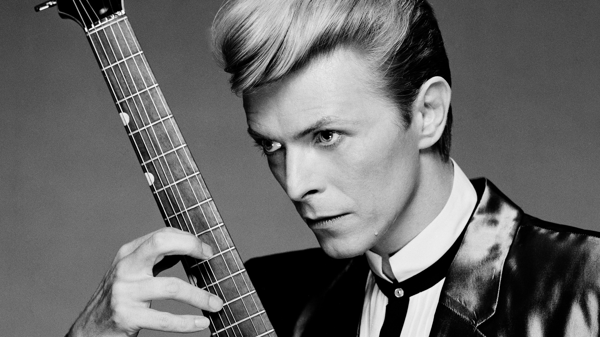

David Bowie
The Man Who Sold The World

David Bowie, 1984 by Greg Gorman.
Timeline to David Bowie Music Career:
- 1962-1967 - Early career to debut album
- 1968-1971 - Space Oddity to Hunky Dory
- 1972-1974 - Glam rock era
- 1974-1976 - "Plastic soul" and the Thin White Duke
- 1976-1979 - Berlin era
- 1980-1988 - New Romantic and pop era
- 1989-1991 - Tin Machine
- 1992-1998 - Electronic period
- 1999-2012 - Neoclassicist era
- 2013-2016 - Final years
- 2016-present - posthumous releases